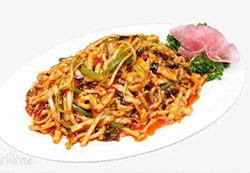
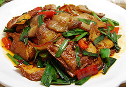

鱼香肉丝
鱼香肉丝，是四川的一道特色名菜，该菜品以泡辣椒、子姜、大蒜、糖和醋炒制猪里脊肉丝而成，由民国时期的一位川菜大厨所创制，相传灵感来自泡椒肉丝。鱼香肉丝是一道著名川菜，其咸鲜酸甜兼备，葱姜蒜香浓郁，其味是调味品调制而成，此法源出于四川民间独具特色的烹鱼调味方法，而今已广泛用于川味的熟菜中。

回锅肉
回锅肉起源四川农村地区 。所谓回锅，就是再次烹调的意思。回锅肉在川菜中的地位是非常重要的，回锅肉一直被认为是川菜之首，川菜之化身，提到川菜必然想到回锅肉。回锅肉色香味俱全，是下饭菜中大部分人会选的菜。配料各有不同，除了蒜苗（青蒜）还可以用彩椒，洋葱，韭菜，锅盔等来制作回锅肉，“家常”顾名思义，“调料家家常有之意，”故每一家制作出的味道都不相同，这一特性，也是赋予了回锅肉这道菜独特的魅力。

夫妻肺片
夫妻肺片是四川省成都市的一道传统名菜，属于川菜系。该菜品由郭朝华、张田政夫妻创制而成，通常以牛头皮、牛心、牛舌、牛肚、牛肉为主料，进行卤制，而后切片。再配以辣椒油、花椒面等辅料制成红油浇在上面。其制作精细，色泽美观，质嫩味鲜，麻辣浓香，非常适口。
中华美食 源远流长